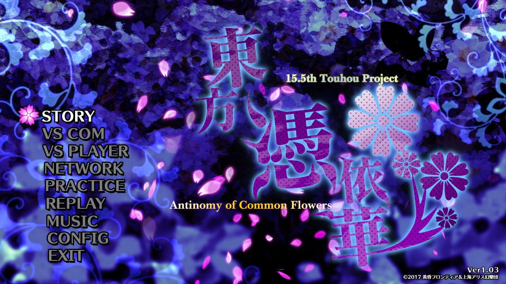

Touhou 15.5 ~ Antinomy of Common Flowers
 
Touhou Hyouibana ~ Antinomy of Common Flowers (東方憑依華 ~ Antinomy of Common Flowers) es la 15.5ª entrega de Touhou desarrollada por Team Shanghai Alice y Twilight Frontier. Fue anunciada durante el evento Doujin! Year-End Party Stream el 11 de Diciembre de 2016.
Posee un total de 20 personajes, 15 de ellos provenientes de Urban Legend in Limbo y 5 totalmente nuevos incluyendo a las jefas finales Joon Yorigami y Shion Yorigami como personajes desbloqueables.
Touhou 16 ~ Hidden Star in Four Seasons

Touhou TenkuushouCetro de Jade de los Cielos~ Hidden Star in Four SeasonsEstrella Oculta en las Cuatro Estaciones (東方天空璋 ～ Hidden Star in Four Seasons ) es la entrega oficial número 16 de la serie, anunciado por primera vez en el blog personal de ZUN el día 20 de abril de 2017 a las 22:09 JST[1]. Una demo jugable tuvo su lanzamiento el 7 de mayo de 2017 en el Reitaisai 14, mientras que la versión completa tuvo su lanzamiento el 11 de agosto de 2017 en el Comiket 92; posteriormente, el día 17 de noviembre de 2017, el juego fue lanzado en Steam, marcando el debut de la serie en esta plataforma.
Touhou 17 ~ Wily Beast and Weakest Creature
Touhou Kikeijuu
Oni en forma de bestia
~ Wily Beast and Weakest Creature
Bestia astuta y criatura más débil
(東方鬼形獣 ～ Wily Beast and Weakest Creature) es la décimo séptima entrega oficial de Touhou Project. Fue anunciado por ZUN en su blog personal el 17 de abril de 2019, a las 14:02 JST.
Una versión de prueba del juego estuvo disponible para ser jugada en la Reitasai 16 el 5 de mayo de 2019. La versión completa fue lanzada el 12 de agosto de 2019 en la Comiket 96.
Touhou 17.5 ~ Gouyoku ibun

2021)
Touhou Gouyoku Ibun
Extraño Relato de Avaricia
~ Suibotsushita Chinshuu Jigoku
Infierno Sumergido de Dolor Hundido
(東方剛欲異聞 ～ 水没した沈愁地獄) es la entrega oficial número 17.5 de la serie, creada por Team Shanghai Alice, en colaboración con Twilight Frontier.
Touhou 18 ~ Unconnected Marketeers
Touhou Kouryuudou ~ Unconnected Marketeers (東方虹龍洞 ～ Unconnected Marketeers lit. Cueva del Dragón Arcoíris ～Comercializadores Desconectados) es la décimo octava entrega oficial de Touhou Project. Fue anunciado por ZUN en el blog de noticias de Touhou Touhou Yomoyama News, el 27 de Febrero de 2021. Una demo jugable fue lanzada el 21 de Marzo del mismo año, en el Reitaisai 18, y la versión completa fue lanzada el 4 de Mayo de 2021.
Touhou 18.5 ~ Black Market of Bulletphilia ~ 100th Black Marke
Bulletphilia-tachi no Yami-Ichiba
~ 100th Black Market
(バレットフィリア達の闇市場 〜 100th Black Market) es un juego danmaku con desplazamiento vertical y el la entrega 18.5 oficial de Touhou Project, que tiene de protagonista a Marisa Kirisame. El juego sigue el mismo estilo de Impossible Spell Card y Violet Detector. El juego fue lanzado el 14 de agosto de 2022 en la Comiket 100 y en Steam
Touhou 19 ~ Unfinished Dream of All Living Ghost
Touhou Juuouen
Beast King Garden
~ Unfinished Dream of All Living Ghost (東方獣王園 〜 Unfinished Dream of All Living Ghost) is the nineteenth official installment of the Touhou Project. The game was released on August 13, 2023 at Comiket 102.